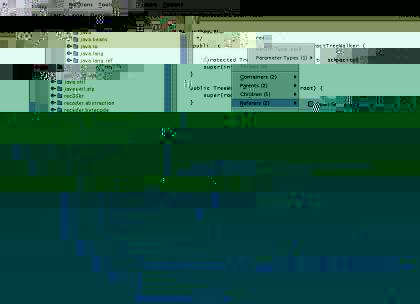

This document describes a set of small example applications for RECODER. You should follow the instructions given here in a command shell. Users of non-Unix operating systems will have to adapt some commands.
recoder.jar and recoder-examples.jar
are in your classpath.
examples directory.
cd doc/examples
To compile the SOURCERER example, you need a
current version of BeanShell in your classpath, available from
www.beanshell.org.
Beanshell is not required to run, however; the console will be
simply be inactive if bsh can not be found.
For most of the examples you may also try out a different project file than the one used in the instructions.
This transformations replaces all names of variables, methods, classes and packages by artificial ones, when this is feasible. It leaves main methods and methods redefining bytecode methods as are, such that the resulting program will be executable.
cd converter javac *.java java Converter rm *.class cd ..
java Obfuscate converter.prj
main method.
cd output ls javac *.java grep main *.java
java _56
rm *.*
cd ..
This transformation inserts a debug statement in front of any single method call within the program. Sometimes expressions must be flattened to do so. The resulting program will be executable and report method callers and callees for each call contained in the sources.
Note: The implementation is not yet really fast. We estimate a possible speed-up of factor 10-100 as soon as the incremental model update works.
java Instrumentalize converter.prj
Unit.java) into the modified
directory. Inspect the modified files.
cp converter/Unit.java output cd output
javac *.java java Converter
rm *.*
cd ..
This program will generate a bunch of HTML files containing pretty printed variants of the original sources. References are hyperlinked to the entity they refer to.
java XReferenceHTMLGenerator collections.prj
cd output
netscape -remote openURL\("file:$PWD/index.html",new-window\) > /dev/null 2>&1 || exec netscape index.html &
rm *.*
cd ..
This shell application shows the number of occurances of all encountered object types in the syntax forest of a project. For convenient classification, the existing type hierarchy is also taken into account. You can see from the results that the most frequent node is the identifier, and that it is most frequently contained in variable references.
java SyntaxStatistics collections.prj
 This Swing application displays formatted sources and syntax trees of all compilation units in a project. It allows to navigate between declarations and referers. There are currently some auxiliary transformations that identify superfluous code fragments such as unused imports, interfaces, exceptions and type casts. If the example code is too small, try this on recoder itself (use a global path to the src directory as command argument). The browser is currently a proof of concept rather than a useful application but it already looks and feels okay. Some of the other examples will be integrated and further analyses and transformations will be added.
java sourcerer.Main converter.prj